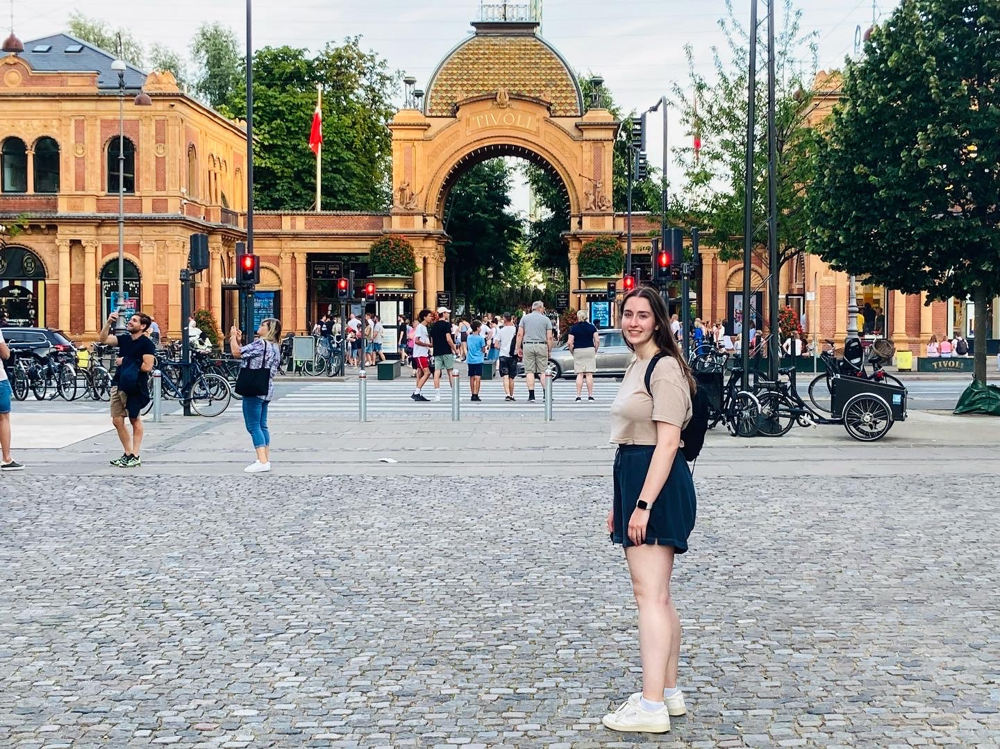
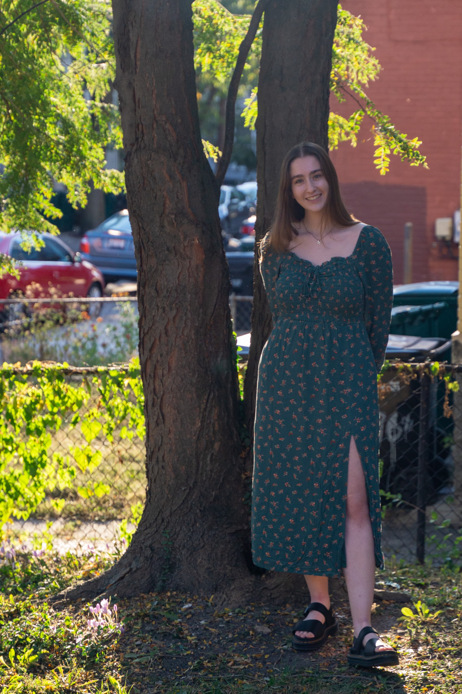

Senior Year
 
Looks like I’ll be graduating soon… That’s a little weird to think about. I’ve loved being a college student at UC. I’ve learned how to be an independent person and balance school, social life, and personal care. Although semesters could be rough at times, and I jokingly said “I don’t wanna graduate anymore, I wanna drop out” a few too many times this year, I am extremely proud of what I have accomplished. This Spring semester has been particularly challenging for me, but I am glad that I kept pushing through.
Thinking about my first semester at UC, I was so sure that I wanted to become an aerospace engineer; who would’ve guessed that a few months later I would be changing my career path and life plans by becoming an astrophysics major? I know that was the right decision for me. I’ve learned about “crazy cool” things like quantum mechanics, black holes, and wave-particle duality through my studies at UC. Honestly, I feel fortunate and amazed that I was able to study physics/astronomy topics so in-depth because not many people get the same chance. Although I have a love for all things astronomy, I found my “Breath of Knowledge” classes and Honors Seminars just as enjoyable as my major’s classes. I am grateful that I had the opportunity to take non-major classes about anthropology, feminism, psychology, geology, and monsters. These experiences taught me that it’s important to have a variety of interests, and to pursue all of them. While I can be busy focusing on astronomy and physics, I learned that it is important to take time for other things that make me happy like cooking, hiking, working on puzzles, and weightlifting. These are all things that I plan on continuing to do after college.
Reflecting back on this past year, I did some things I never imagined I'd be able to do. I spent a Summer living in Copenhagen doing astrophysics research. Prior to this experience, I had never been to Europe and had never traveled by myself (I also had never lost my bags on the way to and from Europe before, but there's a first for everything, and I learned to go with the flow-ish). I've given multiple talks/poster presentations on my research, which is something I'm proud of because it shows that I'm becoming more confident with my science knowledge and comfortable discussing it with an audience. I also formed stronger relationships with my peers this year, which I am thankful for. It's sad thinking that I won't see them everyday in class or the PLC anymore, but I'm excited to see what cool things they all do.
I’ve spent the last four years creating a home in a new city, and now I’m unsure of exactly what my next steps are. I’ll either be going to graduate school or continuing my astrophysics research here in Cincinnati for a year. Regardless, I am going to keep learning new things. I am amazed by our universe and everything we still have to discover, so I plan on learning more about it for the rest of my life.
Update: I will be moving to New Mexico in August for a full-time astrophysics research job at Los Alamos National Laboratory, and I am beyond excited!